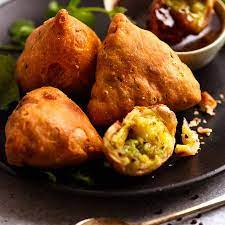

The Old World
Appetizer

Samosa
Ingredients: Flour, Potatoes, Peas, Spices, Onion, Oil, Salt
Description: Samosa is believed to have originated in the Middle East and then spread to the Indian subcontinent. It is thought that traders and travelers brought the dish to India, where it was further developed and adapted to local tastes and ingredients. Samosas are similar to other filled pastries found in different parts of the world, such as the Greek Spanakopita, the Turkish Borek, and the Central Asian Samsa. The exact origin of the samosa is difficult to trace, but it is widely accepted that the dish has been a part of Indian cuisine for many centuries. Samosas are mentioned in several medieval Indian texts, including the Ain-i-Akbari, a 16th-century work by the Mughal emperor Akbar's court historian Abu'l-Fazl. The popularity of samosas has led to the dish being widely adopted in other countries, especially in the Middle East and Africa. In India, samosas are a staple food and are commonly consumed as a snack or appetizer. They are widely available in street food stalls, cafes, and restaurants. The impact of samosas on cuisine in the Indian subcontinent has been significant. They have become an integral part of the region's food culture and are widely recognized as a symbol of Indian cuisine. The popularity of samosas has also spread to other parts of the world, where they are now widely enjoyed as a snack or appetizer. Overall, samosas have had a lasting impact on the world's cuisine, showcasing the diversity and richness of the food culture of the Indian subcontinent. They have become a symbol of the region's culinary heritage and are widely recognized as one of the world's most popular snack foods.
Main Course

Butter Chicken
Ingredients: Chicken, Butter, Tomato Puree, Heavy Cream, Ginger, Garlic, Spices, Onion, Oil, Salt
Description: Butter chicken, also known as murgh makhani, is a dish that originated in the Punjab region of India. The dish is believed to have been created in the 1950s by chefs in Delhi, India, who were looking for ways to use leftover tandoori chicken. Tandoori chicken is a popular dish made by marinating chicken in a mixture of yogurt and spices, and then cooking it in a clay oven called a tandoor. The creation of butter chicken is often credited to Kundan Lal Gujral, the founder of Moti Mahal Delux, a restaurant in Delhi. He created the dish by adding a creamy tomato-based sauce to leftover tandoori chicken, which resulted in a dish that was rich, flavorful, and well-received by diners. Butter chicken is similar to other dishes found in different parts of the world that are made with chicken cooked in a creamy sauce. For example, the French dish coq au vin and the Italian dish cacciatore both feature chicken cooked in a sauce made with wine or tomatoes and other ingredients. The popularity of butter chicken has had a significant impact on the cuisine of the Indian subcontinent and on Indian cuisine around the world. The dish is now widely recognized as a staple of Indian cuisine and is enjoyed by people of all ages and backgrounds. Butter chicken has also become one of the most popular dishes served in Indian-style restaurants and is a common menu item in Indian restaurants around the world. Overall, butter chicken has had a lasting impact on the world's cuisine, showcasing the rich and diverse food culture of India. The dish has become a symbol of Indian cuisine and continues to be enjoyed by people all over the world.
Desert